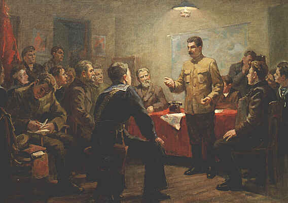

Page index / courses
1931-1940.html
Russia: 1931-1940

With Stalin as the dictator of the Soviet Union during the 1930's the dominant style of literature written and the painting at this time was socialist realism. Socialist realism entailed the idea that the arts should glorify the ideals of communism. Lack of adherence to this style resulted in arrest, exile, and worse.
One of the poets who wrote during this time was Mandelshtam.
A famous Russian novel about the 1930's, Master and Margarita, was written by Bulgakov. It was published by his wife in the late 1960's after his death. For a short timeline of the events in the novel, click here. To read Chapter 1 in Russian, click here.